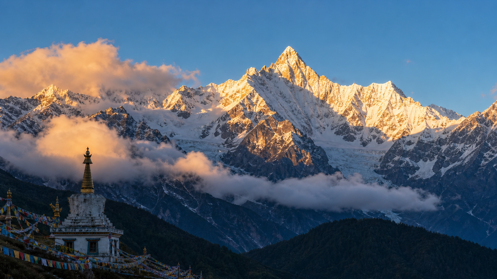

藏区八大神山之首，日照金山的终极震撼。
梅里雪山位于云南省迪庆藏族自治州德钦县境内，是横断山脉中最为壮观的一段。主峰卡瓦格博海拔6740米，是云南省最高峰，也是藏传佛教八大神山之首。每年无数藏民前来转山朝拜，而"日照金山"——清晨第一缕阳光将雪峰染成金色的奇观，是每个旅行者一生必看的画面。卡瓦格博至今仍是一座处女峰，1991年中日联合登山队17名队员遇难后，国家已禁止攀登此峰。

D1从香格里拉出发，经奔子栏、金沙江大拐弯到达飞来寺（约4小时车程）。傍晚在飞来寺观景台守候日落。D2清晨6点起床等待日照金山——日出时分，阳光从卡瓦格博峰尖开始，逐一染红整个梅里十三峰，持续约20分钟。之后可前往明永冰川或雨崩村徒步。D3返回香格里拉，沿途游览白马雪山垭口。
1. 日照金山最佳观赏期为10月下旬至次年3月，夏季雨季概率低且雾多难见真容。
2. 飞来寺海拔约3400米，注意高原反应，不要剧烈运动。
3. 清晨气温极低（可能-10℃以下），务必穿最厚的保暖衣物。
4. 雨崩村徒步需2—3天，是经典的入门级高海拔徒步路线。
雨崩村（徒步天堂，需从西当村步行或乘越野车进入）、明永冰川（世界少见的低纬度冰川）、盐井古盐田（西藏芒康，车程约2小时）。